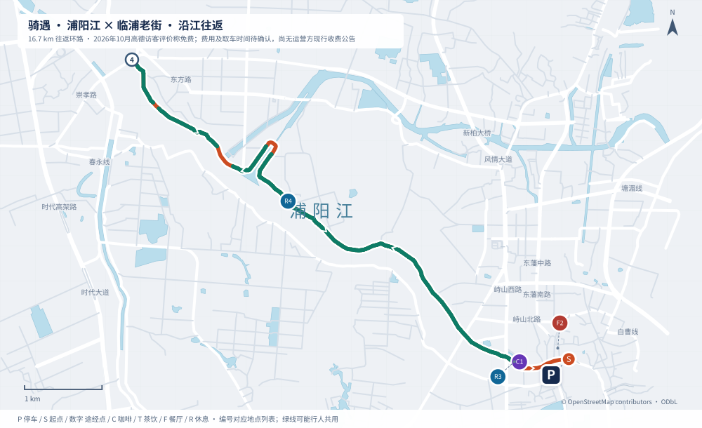

浦阳江 · 百度手机路线验证
待手机实测：这是独立验证页。链接按百度官方 App 调起接口生成，不代表已成功显示整条路线。
请在已安装百度地图的手机上，用 Safari 或系统浏览器打开此页。微信等内置浏览器可能拦截调起，请从菜单选择“在浏览器打开”。
先测试去程与返程，再测试完整往返。每次打开后，检查是否为自行车骑行，起终点和途经点是否齐全，线路是否沿浦阳江。
正在读取浦阳江路线…
与本站路线对照
本站为约 16.7 公里完整往返。百度会按起终点与途经点重新规划，不是导入本站轨迹；请检查是否换岸、绕路，或把往返压缩成零距离。

地图数据 © OpenStreetMap contributors · ODbL。规划路线，非实骑轨迹。
测试结果怎么反馈
请记录手机系统、百度版本，以及哪项测试成功。截图尽量同时包含起终点、途经点、地图路线和公里数。打开 App 成功，不等于途经点或往返成功。
若“完整往返”失败、去返程成功，可以先分两段使用；若途经点被忽略，则不能据此声称复现了本站线路。